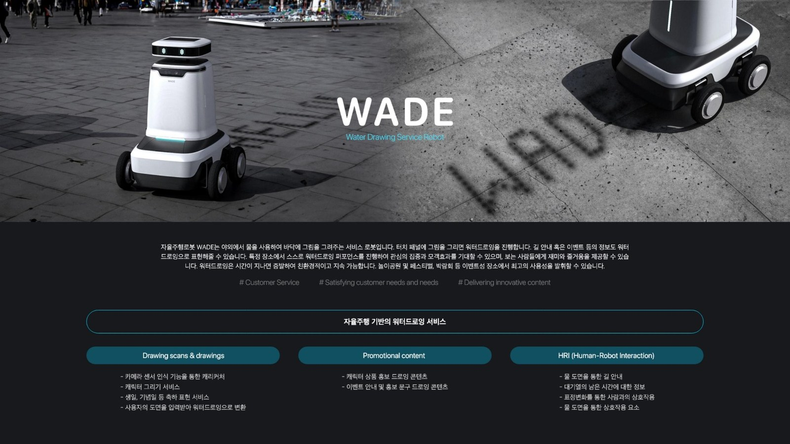
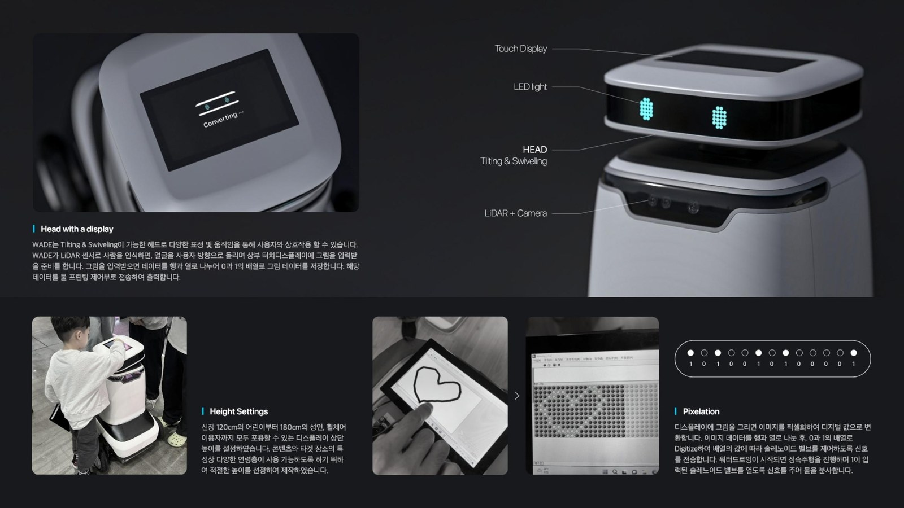

WADE.
거리 위에서 물로 그림을 그리는 자율주행 서비스 로봇. KIRO 서울로봇아카데미와 협업해 컨셉부터 프로토타입까지 완성한 프로젝트로, HCI KOREA 2024 Creative Award 최우수상을 수상했습니다.

기술을 도구가 아닌 감성적 매개로 다루는 서비스 로봇의 형태 연구.
WADE는 자율주행 기반의 실외 서비스 로봇으로, 물을 잉크 삼아 아스팔트 위에 임시의 그림과 문구를 남깁니다. 무리한 첨단 기술보다 적정 기술(Appropriate Technology)을 선택함으로써, 사람들과 도시 공간이 로봇을 부드럽게 받아들일 수 있도록 설계했습니다.
디자인 씽킹 기반의 리서치 → 아이데이션 → 프로토타입 → 사용성 평가의 전 과정을 주도했고, 2024년 국제인간공학회(IEA 2024)에 논문 Water Drawing Entertainment Robot Using Appropriate Technology Based on Design Thinking을 투고했습니다.

Fig. 02 — On Street · Water Drawing-
01Phase 01
Research
서비스 로봇 트렌드 리서치, KIRO 로봇아카데미 협업, 도심 실외 시나리오 관찰 조사.
-
02Phase 02
Ideation
서비스 컨셉, 제품군 유형화, LiDAR 기반 프로그램 시안, HRI 요소 정의.
-
03Phase 03
Engineering & Design
실사 모형 제작, LiDAR 세팅, 회로 개발, 3D 모델링, 렌더링, 그래픽 정리.
-
04Phase 04
Final Prototype
실주행 검증 및 전시 · IEA 2024 논문 투고.
Hard Mission 서비스 로봇이 도시에서 사람과 마주칠 때, 딱딱한 각보다 부드러운 실루엣이 심리적 거리를 줄인다. Height · 620mm Weight · 24kg

Fig. 04 — HRI Head + LiDAR감정을 표현할 수 있는 최소한의 얼굴 — ‘HELLO!’라는 물 자국 하나만으로도 로봇에 대한 사람들의 태도가 달라집니다. 우리는 로봇에게 무엇을 시킬지가 아니라, 로봇이 어떤 존재로 보일지부터 디자인해야 합니다.
틸팅 헤드는 3단계의 각도로 사용자와 아이컨택을 형성합니다. 대기 상태에서는 정면을 응시하고, 사람이 접근하면 살짝 고개를 기울여 친밀감을 표현합니다.
“로봇에게 얼굴을 주는 것이— Design Note, 2023.08
기능을 더하는 것보다 중요했다.”
실제 도심 배치 실험에서 사람들은 로봇의 기능보다 로봇의 표정과 몸짓에 더 큰 반응을 보였습니다. 기술이 완벽하지 않아도, 존재의 방식이 다정하면 관계는 시작됩니다.
본 프로젝트는 IEA 2024 (Proposal No. 419)에 논문으로 투고되었습니다.